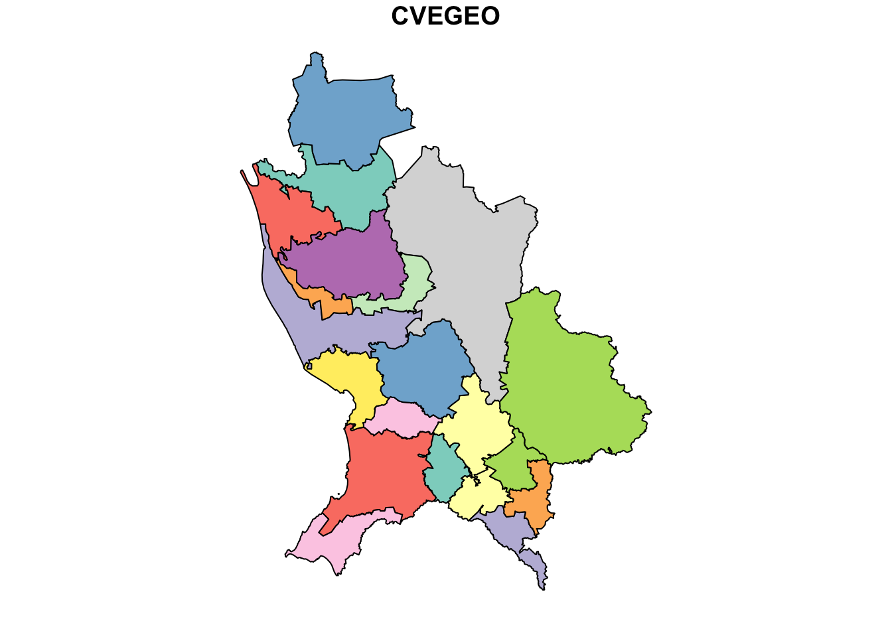

# Librerías ----
library(tidyverse)
library(sf)
library(leaflet)Cortando Islas
Mapas
Elaborado por: Juvenal Campos y Ami Sosa
Ver países y continentes enteros ya no es un derecho exclusivo de los astronautas o los superhéroes. Gracias a los sistemas de información geográfica cada vez es más sencillo crear nuestros propios mapas y representar visualmente los fenómenos que consideramos importantes para entender mejor el mundo que nos rodea. Sin embargo, hacer mapas y manipular información geográfica es un ejercicio muy poderoso que puede ser usado para informar o para desinformar.
“Recuerda, un gran poder conlleva una gran responsabilidad”

Para el presente tutorial nos concentraremos en el caso de presentar información a través de mapas con territorios insulares.
Las islas son uno de esos detalles que podemos pasar por alto pero que pueden tener efectos confusos para quienes ven nuestros mapas, ya que no todas las islas son iguales.
De acuerdo con el INEGI, el Territorio Insular Mexicano está integrado por 2,128 islas entre las cuales sólo 82 están pobladas.
Es importante investigar previamente para saber con qué tipo de isla estamos lidiando, para decidir si contribuye o deteriora la claridad de comprensión y análisis de nuestros datos.
Por ejemplo, si estamos mapeando defunciones de COVID-19 por municipio, incluir en nuestro mapa una isla deshabitada que forma parte de un municipio podría llevarnos a visualizar información errónea y decir que esa isla tiene defunciones cuando esta ni si quiera está poblada.
Entonces, si consideras que lo más conveniente es no mapear una isla pero no sabes cómo eliminarla, no te preocupes, aquí te proponemos una manera de hacerlo. (Otra forma de eliminar islas la puedes encontrar acá)
Inicio del tutorial
Si quieres descargar la base de datos para replicar este ejercicio, puedes descargarla de este enlace. La base de datos en la que nos basamos es la de división municipal de CONABIO, la cual puedes descargar de este enlace.
Primero lo básico, cargar las librerías tidyverse, sf y leaflet que nos ayudarán a manipular y visualizar información geográfica.
Después debemos obtener la base de datos con el archivo de información geográfica que vamos a utilizar para crear nuestro mapa y filtramos el nombre del estado al que le vamos a quitar las islas.
En este caso vamos a eliminar las islas Revillagigedo de Colima, que son consideradas como Patrimonio Natural de la Humanidad, como parque nacional y porque tienen una población muy pequeña (60 habitantes entre todas las islas).

# Datos ----
# Capa geografica
url_shape <- "https://raw.githubusercontent.com/JuveCampos/juveBlog/master/cortando%20Islas/mpios.geojson"
# Leemos el shape
bd <- st_read(url_shape,
quiet = T)
# Filtramos Colima
colima <- bd %>% filter(NOM_ENT == "Colima")Exploramos la base y la mapeamos para ver cómo se ve el estado con islas y después nos aseguramos de que sea una base geográfica.
# Exploramos la base
plot(colima, max.plot = 1)
Como podemos ver en la imagen de arriba, el objeto colima efectivamente es una base de datos geográfica que abarca tanto la zona territorial como las islas que se encuentran al poniente.
# Checamos el sistema de coordenadas
## de referencia (crs)
st_crs(colima)Coordinate Reference System:
User input: WGS 84
wkt:
GEOGCRS["WGS 84",
DATUM["World Geodetic System 1984",
ELLIPSOID["WGS 84",6378137,298.257223563,
LENGTHUNIT["metre",1]]],
PRIMEM["Greenwich",0,
ANGLEUNIT["degree",0.0174532925199433]],
CS[ellipsoidal,2],
AXIS["geodetic latitude (Lat)",north,
ORDER[1],
ANGLEUNIT["degree",0.0174532925199433]],
AXIS["geodetic longitude (Lon)",east,
ORDER[2],
ANGLEUNIT["degree",0.0174532925199433]],
ID["EPSG",4326]]La proyección tiene un sistema de referencia de coordenadas igual a 4326 (WGS84), lo que significa que está en términos de latitud y longitud. Saber el sistema de referencia es muy importante a la hora de utilizar y procesar la información.
Después obtenemos las coordenadas extremas del territorio de Colima, es decir, el punto máximo en x y en y, el punto mínimo en x y en y, buscando generar un cuadro que englobe al estado sin sus islas.
Puedes obtener estas coordenadas en Google Maps, como muestran las imágenes a continuación:

Coordenadas mínimas del polígono territorial de Colima

Coordenadas máximas del polígono territorial de Colima
Registramos las coordenadas:
# Coordenadas extremas Colima Territorial
maxX = -103.47499
minX = -104.76983
maxY = 19.563769
minY = 18.65329Después elaboramos la matriz de coordenadas que dará origen al cuadro utilizando la función expand.grid(). Lo que hace esta función es crear una base de datos con todas las combinaciones posibles de los vectores que introducimos en la función.
# Generamos combinaciones de coordenadas a
## partir de las coordenadas extremas
cuadro <- expand.grid(x = c(minX,
maxX),
y = c(minY,
maxY)) %>%
as.matrix()
# Imprimimos la tabla del cuadro
cuadro x y
[1,] -104.7698 18.65329
[2,] -103.4750 18.65329
[3,] -104.7698 19.56377
[4,] -103.4750 19.56377Una vez que tenemos la matriz, ordenamos las coordenadas de manera que formen un cuadro cerrado , repitiendo la coordenada 1, de tal forma que sigan un caminito o trayectoria:
# Forma de ordenar las coordenadas de tal forma
## que generen una trayectoria que genere
## un cuadro
cuadro <- cuadro[c(1,2,4,3,1),]Convertimos el cuadro en una lista para poder convertirlo después en un objeto geométrico poligonal, con el sistema de coordenadas de referencia crs = 4326 de latitud y longitud.
# Convertimos a lista
cuadro <- list(cuadro)
# Convertimos a objeto geografico
cuadro <- st_polygon(cuadro) %>% st_sfc(crs = 4326)Ahora si, verifiquemos que el cuadro fue creado correctamente y exploremos cómo se ve.
# Checamos como se ve el cuadro
leaflet(colima) %>%
addTiles() %>%
addPolygons(opacity = 1) %>%
addPolygons(data = cuadro,
color = "red")!Perfecto! El cuadro rojo que creamos abarca al estado de Colima sin sus islas.
Pero ¿por qué el orden de coordenaas para cerrar el cuadro no es 1,2,3,4,1? pues porque necesitamos crear un cuadrado y según las coordenadas que nos dio la matriz ese sería el orden adecuado, si lo hacemos del 1 al 4 trazaríamos un moño sobre Colima, no un cuadro. (Como se puede ver a continuación).

Ahora, intersectamos el cuadro con el polígono se Colima a traves de la función st_intersection(x, y), la cual extrae del polígono x lo que se intersecta con el polígono y.
# Extraemos la parte del poligono de Colima que
## se intersecta con el cuadro que generamos
colima_sin_islas <- st_intersection(colima, cuadro)Warning: attribute variables are assumed to be spatially constant throughout
all geometries# Checamos que efectivamente solo tengamos el
## polígono territorial de Colima
plot(colima_sin_islas)Finalmente tenemos que regresar ese polígono al shape original. Para eso, primero sacamos de nuestra base de datos a Colima con islas y luego metemos a Colima sin islas.
# Le quitamos Colima
bd <- bd %>%
filter(NOM_ENT != "Colima")
# Metemos el Colima sin islas.
bd <- rbind(bd, colima_sin_islas)
# Y aquí podemos ver que Colima ya no tiene a las Islas Revillagigedo en nuestro mapa.
plot(bd, max.plot = 1)Por último guardamos nuestro nuevo mapa.
OJO cuando trabajamos con archivos .geojson, no nos es posible reescribirlos (salvo que ), así que tenemos que crear nuevos archivos para cada cambio que hagamos.
# Guardar el nuevo archivo geográfico
st_write(bd,
"01_Datos/Shapes/mpios_sin_revillagigedo.geojson")
# # Si a fuerzas quieres sobre-escribir
# st_write(bd,
# '01_Datos/Shapes/mpios_sin_revillagigedo.geojson',
# layer_options = 'OVERWRITE=YES',
# update = TRUE)Para agilizar el proceso de cortar islas podemos hacer una función. Los datos de entrada que utilizaremos para nuestra función son las coordenadas del cuadro y el shape que vamos a recortar.
# Hacemos nuestra función
recorte_cuadro <- function(shp,
minX,
maxX,
minY,
maxY){
# Copiamos y adecuamos el código que escribimos antes
# Elaboramos la matriz de coordenadas que dará
##origen al cuadro
cuadro <- expand.grid(x = c(minX,
maxX),
y = c(minY,
maxY)) %>%
as.matrix()
# Ordenamos de manera cíclica el cuadro, y lo cerramos como lo hicimos anteriormente.
cuadro <- cuadro[c(1,2,4,3,1),]
# Lo convertimos en lista y después en un objeto geométrico poligonal con sistema de coordenadas de referencia crs = 4326 lat/long.
cuadro <- list(cuadro)
cuadro <- st_polygon(cuadro) %>%
st_sfc(crs = 4326)
# Ahora si, ¡fuera islas!
edo_sin_islas <- st_intersection(shp, cuadro)
# Especificamos lo que queremos que nos devuelva la función:
return(edo_sin_islas)
}Con nuestra nueva función ahorramos tiempo y podemos cortar las islas de Nayarit y Yucatán (por ejemplo) mucho más rápido.
# Remover las Islas Marias de Nayarit...
nayarit <- bd %>%
filter(NOM_ENT == "Nayarit")
nayarit_sin_islas_marias <- recorte_cuadro(
shp = nayarit,
minX = -105.7765,
maxX = -103.7209,
minY = 20.60322,
maxY = 23.0845)Warning: attribute variables are assumed to be spatially constant throughout
all geometries# Vemos que si funciona.
plot(nayarit_sin_islas_marias, max.plot = 1)
Ahora vamos con Yucatán.
# Remover el arrecife Alacranes de Yucatan
yucatan <- bd %>% filter(NOM_ENT == "Yucatán")
yucatan_sin_arrecife_alacranes <- recorte_cuadro(
shp = yucatan,
minX = -90.620039,
maxX = -87.414154,
minY = 19.584267,
maxY = 21.731110)Warning: attribute variables are assumed to be spatially constant throughout
all geometries# Vemos que ya no tiene islas
plot(yucatan_sin_arrecife_alacranes, max.plot = 1)Finalmente generamos una nueva capa de datos sin las islas de Yucatán ni las de Nayarit.
bd <- bd %>%
# Quitamos los estados con islas
filter(!(NOM_ENT %in% c("Yucatán", "Nayarit"))) %>%
# Metemos los nuevos sin islas
rbind(yucatan_sin_arrecife_alacranes, nayarit_sin_islas_marias)
# Nos aseguramos de que todo haya funcionado bien
plot(bd, max.plot = 1)
# Guardamos el resultado en un nuevo archivo .geojson
st_write(bd, "01_Datos/Shapes/mpios_con_menos_islas_aun.geojson")
# # Igual, si a fuerzas quieres sobre-escribir
# st_write(bd,
# '01_Datos/Shapes/mpios_con_menos_islas_aun.geojson',
# layer_options = 'OVERWRITE=YES',
# update = TRUE)¡Y listo!
Tenemos a los tres estados mapeados sin islas, listos para comunicar información correcta y sin datos que puedan generar confusión.
Este procedimiento es útil para ilustrar como podemos manipular bases de datos geográficas, las cuales, aparte del tratamiento normal que se puede hacer a través de los verbos dplyr que aplican a todas las bases de datos, también involucran un tipo de manipulación espacial a partir de trabajar con las geomatrías que tienen asociadas.
Siempre es un buen ejercicio reflexionar antes de construir mapas y preguntarnos ¿Qué quiero comunicar? ¿Por qué quiero comunicar esto? ¿Cómo se relaciona la geografía con los datos que voy a utilizar? ¿Cómo mapeo mis datos de la manera más clara posible? En este caso, desasociar islas deshabitadas tiene sentido pero, por ejemplo… ¿sería válido deshacernos de la isla de Cozumel en nuestro análisis, y en la cual vive la mayoría de la población del municipio? Son cosas que nuestra metodología de trabajo debe considerar.
Recuerda usar el poder de los mapas responsablemente.

¡Gracias por leernos! :3